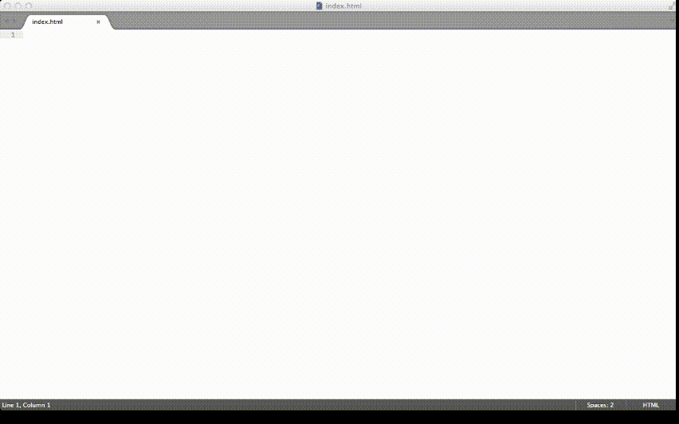

Your browser doesn't support the features required by impress.js, so you are presented with a simplified version of this presentation.
For the best experience please use the latest Chrome, Safari or Firefox browser.
Get started with web development
How to create a web applikation
and we make a timer app
Stina Qvarnström
Developer at Bool by Sigma
Twitter & Github:
@stinaq
How do I start?
I will describe how to set up a web application and get started with JavaScript and CSS. Let's go!
It shouldn't be hard to get going, but at first glance it can seem that way.

But we want to do real stuff, get started straight away
What do we need
- HTML-structure
- Project structure (folders and so)
- Dependencies
- Best practice setup
We will generate all of that, and then write JavaScript to count down time to a date.
How?
Start by installing a couple of tools to help us create a skelton to a web application/web page running with JavaScript
Time for installation
but first: kitten break
(there's only 9 steps)
Step 1, install Nodejs
Gå till nodejs.org, ladda ner och installera
Step 7, create project folder
mkdir creates folder
cd moves you in the terminal/cmd shell
Vad fick vi?
- Projektmapp med rekommenderad struktur
- HTML-fil med allt importerat och klart
- CSS och JavaScriptfiler
- Tomteverkstad
Sen då?
Vad kan man göra?
Angular, WordPress, Ember.....
Slut!
Allt finns på
stinaq.me
Jag finns också på stinaq.me, och twitter, och om någon testar blir jag så glad!
dflga